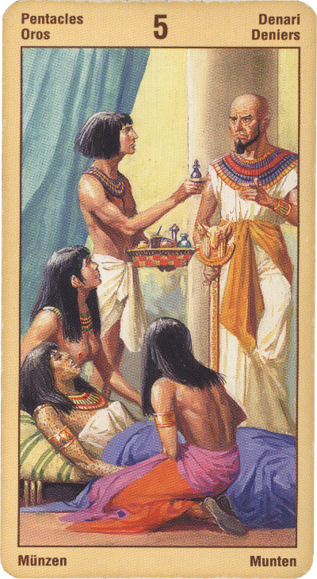

Пятёрка Пентаклей
Прямое положение: карта предсказывает прежде всего материальные трудности.
Пятёрка Денариев - это карта кризиса, лишений и треволнений. Это упадок, провал в делах, когда мы чувствуем себя жалкими, несчастными, брошенными, а иногда и в самом деле находимся в стеснённых обстоятельствах. Ситуация повесы, гуляки часто идет по пятерке пентаклей.
Пятерка Монет: Карта нищих называют ее. Карта катастроф, бедности, разорения, нищеты. Проблемы со здоровьем. Любые авантюры кончаться плохо. Бизнес обречен на провал. Одиночество. Неудачный роман. Человек склонный к риску, азартным играм, воплощающий в жизнь рискованные идеи, которые его и губят.
В перевернутом виде означает перерасход энергии, растрату резервов, уязвимость, страх; сигнализирует о том, что вы свернули на плохую дорожку; символизирует дисгармонию в любовных отношениях.
Отрицательное толкование: Крушения, хаос в жизни, бесчестие, если работа - то временная, развод из-за финансовых прензий супругов к друг другу. Распутство. Риск потери имущества по суду.